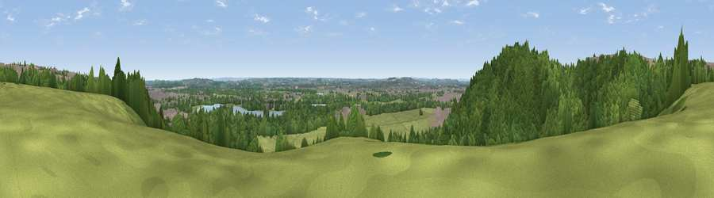

Viewpoint near Colwick
#16492 in England · top 18% of its area beats it · near ColwickWhere it is
The exact computed spot (SK 59675 39875). Click the marker for map links.
The view, rendered

A 360° render of this exact spot computed from the terrain model, tree cover and land cover — summer colours, afternoon light, calibrated against photographs of famous viewpoints. Real trees, hedges and buildings will differ in detail.
The panorama
Grey silhouette: terrain skyline in each direction (720 bearings, Earth curvature and refraction included). Dashed green: skyline with trees (+15 m) and buildings (+8 m) as obstacles. Blue strip: how far the ground is visible on each bearing.
Where the view opens
Wedge length = distance to the farthest visible ground on that bearing (vegetation-aware). Rings at 10, 25 and 50 km.
What fills the view
34% built-up · 32% woodland · 27% grassland · 4% cropland · 3% water
Angular shares of the visible panorama (visual magnitude), not map area. Landscape diversity 0.58 (0–1 Shannon).
Key numbers
More beautiful places nearby
The staircase of upgrades: each row has a higher view potential than everything closer. Driving times are estimates from straight-line distance, calibrated against real road routing — check an actual route before setting out.
| Place | Direction | Drive | Score |
|---|---|---|---|
| Viewpoint near Arnold | N · 7 km | ~15 min | 64.1 |
| No Man's Lane | W · 14 km | ~25 min | 65.8 |
| Viewpoint near Stathern | ESE · 20 km | ~34 min | 66.3 |
| Viewpoint near Stathern | ESE · 20 km | ~35 min | 67.2 |
| Viewpoint near Belvoir | ESE · 23 km | ~38 min | 68.9 |
| Viewpoint near Belvoir | ESE · 23 km | ~38 min | 70.8 |
| Ives Head | SSW · 26 km | ~42 min | 73.3 |
| Viewpoint near Woodhouse Eaves | SSW · 27 km | ~43 min | 77.7 |
52.95294, -1.11322 · source: screening · position refined by local search. Computed location — check access rights before visiting.